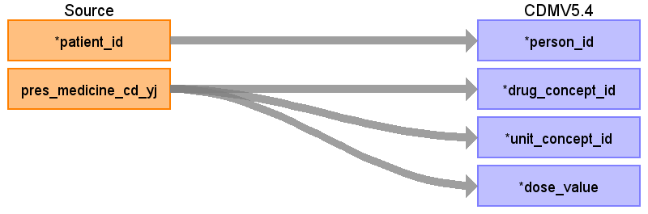
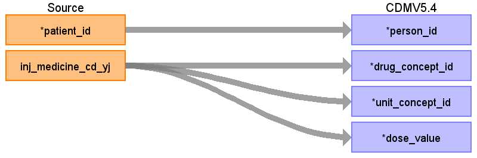

ターゲットテーブル:drug_era
・当テーブルはOMOP CDMのdrug_exposureテーブルから作成される。
・ETL処理についてはGitHub OHDSI/CommonDataModel に含まれているスクリプトを引用改変している。
https://github.com/OHDSI/CommonDataModel/blob/main/rmd/sqlScripts.Rmd
・処理概要は以下の通り
30日ルール: 同一薬剤・同一用量の投薬記録間隔が30日以内の場合、連続した一つのdose_eraとして統合される。
30日以上空いた場合は「連続したdrug_eraにはならず、複数のdrug_eraレコード」として出力される。
成分レベル統合: drug_concept_idを成分（Ingredient）レベルに統合される。
用量別統合: 同一成分でも用量が異なる場合は別々のdose_eraとして扱う。
用量情報: drug_strengthベースの高精度計算が用いられている。
本項では、drug_exposureの元となる、PrescriptionData と dose_eraテーブルの各項目のとの出力結果の対応を記載する。

| Destination Field | Source field | Logic | Comment field |
|---|---|---|---|
| dose_era_id | 一意の連番を設定する | ||
| person_id | patient_id | ||
| drug_concept_id | pres_medicine_cd_yj | route_concept_idに変換
Source_to_concept_map: VocabID:RINCHU_DRUG DomainID:Drug |
YJコードをsource_to_concept_mapを介してRxNome他のStandard Vocabularyに変換する |
| unit_concept_id | pres_medicine_cd_yj | 標準化された薬剤のコンセプトIDから、drug_strengthの以下のコンセプトIDを適宜設定する。
amount_unit_concept_id numerator_unit_concept_id denominator_unit_concept_id |
|
| dose_value | pres_medicine_cd_yj | 標準化された薬剤のコンセプトIDから、drug_strengthの以下のコンセプトIDを適宜設定する。
amount_value numerator_value denominator_value |
|
| dose_era_start_date | drug_exposure_start_dateの（同一薬剤のと投与期間30日毎に）最初の日付 | ||
| dose_era_end_date | drug_exposure_end_dateの（同一薬剤のと投与期間30日毎に）最後の日付 |
本項では、drug_exposureの元となる、InjectionData と dose_eraテーブルの各項目のとの出力結果の対応を記載する。

| Destination Field | Source field | Logic | Comment field |
|---|---|---|---|
| dose_era_id | 一意の連番を設定する | ||
| person_id | patient_id | ||
| drug_concept_id | inj_medicine_cd_yj | route_concept_idに変換
Source_to_concept_map: VocabID:RINCHU_DRUG DomainID:Drug |
YJコードをsource_to_concept_mapを介してRxNome他のStandard Vocabularyに変換する |
| unit_concept_id | inj_medicine_cd_yj | 標準化された薬剤のコンセプトIDから、drug_strengthの以下のコンセプトIDを適宜設定する。
amount_unit_concept_id numerator_unit_concept_id denominator_unit_concept_id |
|
| dose_value | inj_medicine_cd_yj | 標準化された薬剤のコンセプトIDから、drug_strengthの以下のコンセプトIDを適宜設定する。
amount_value numerator_value denominator_value |
|
| dose_era_start_date | drug_exposure_start_dateの（同一薬剤のと投与期間30日毎に）最初の日付 | ||
| dose_era_end_date | drug_exposure_end_dateの（同一薬剤のと投与期間30日毎に）最後の日付 |